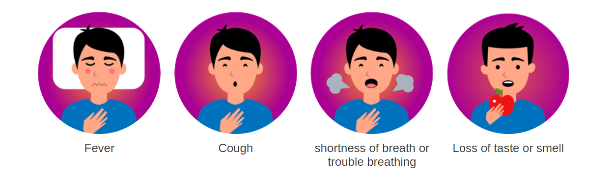
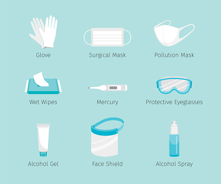
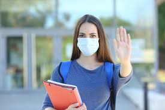

COVID-19 (coronavirus disease 2019) is a disease caused by a virus named SARS-CoV-2 and was discovered in December 2019 in Wuhan, China. It is very contagious and has quickly spread around the world.
COVID-19 most often causes respiratory symptoms that can feel much like a cold, a flu, or pneumonia. COVID-19 may attack more than your lungs and respiratory system. Other parts of your body may also be affected by the disease.
Most people with COVID-19 have mild symptoms, but some people become severely ill.
Some people including those with minor or no symptoms may suffer from post-COVID conditions — or “long COVID”.
Older adults and people who have certain underlying medical conditions are at increased risk of severe illness from COVID-19.
Hundreds of thousands of people have died from COVID-19 in the United States.
Vaccines against COVID-19 are safe and effective. Vaccines teach our immune system to fight the virus that causes COVID-19.
Symptoms
COVID-19 affects different people in different ways. Most infected people will develop mild to moderate illness and recover without hospitalization.
Most common symptoms

fever
cough
tiredness
loss of taste or smell
less common symptoms
sore throat
headache
aches and pain
diarrhoea
a rash on skin
red or irritated eyes
Seek immediate medical attention if you have serious symptoms. Always call before visiting your doctor or health facility.
On average it takes 5–6 days from when someone is infected with the virus for symptoms to show, however it can take up to 14 days.
Treatments
Self-care
Asymptomatic cases, mild cases of COVID-19:
Isolate yourself in a well ventilated room.
Use a triple layer medical mask, discard mask after 8 hours of use or earlier if they become wet or visibly soiled. In the event of a caregiver entering the room, both caregiver and patient may consider using N 95 mask.
Mask should be discarded only after disinfecting it with 1% Sodium Hypochlorite.

Take rest and drink a lot of fluids to maintain adequate hydration.
Follow respiratory etiquettes at all times.
Frequent hand washing with soap and water for at least 40 seconds or clean with alcohol-based sanitizer.
Don’t share personal items with other people in the household.
Ensure cleaning of surfaces in the room that are touched often (tabletops, doorknobs, handles, etc.) with 1% hypochlorite solution.
Monitor temperature daily.
Monitor oxygen saturation with a pulse oximeter daily.
Connect with the treating physician promptly if any deterioration of symptoms is noticed.
Instructions for caregivers: Mask: The caregiver should wear a triple layer medical mask. N95 mask may be considered when in the same room with the ill person. Hand hygiene: Hand hygiene must be ensured following contact with ill person or patient’s immediate environment. Exposure to patient/patient’s environment: Avoid direct contact with body fluids of the patient, particularly oral or respiratory secretions. Use disposable gloves while handling the patient. Perform hand hygiene before and after removing gloves.
Medical treatments
Treatment for patients with mild/asymptomatic disease in home isolation
Patients must be in communication with a treating physician and promptly report in case of any worsening.
Continue the medications for other co-morbid illness after consulting the treating physician.
Patients to follow symptomatic management for fever, running nose and cough, as warranted.
Patients may perform warm water gargles or take steam inhalation twice a day.
When to seek immediate medical attention:
Difficulty in breathing
Dip in oxygen saturation (SpO2 < 94% on room air)
Persistent pain/pressure in the chest
Mental confusion or inability to arouse
how to stop corona virus from spreading
Protect yourself and others around you by knowing the facts and taking appropriate precautions. Follow advice provided by your local health authority.
Check with your local health authority for the most relevant guidance for your region.

To prevent the spread of COVID-19:
Maintain a safe distance from others (at least 1 metre), even if they don’t appear to be sick.
Wear a mask in public, especially indoors or when physical distancing is not possible.
Choose open, well-ventilated spaces over closed ones. Open a window if indoors.
Clean your hands often. Use soap and water, or an alcohol-based hand rub.
Get vaccinated when it’s your turn. Follow local guidance about vaccination.
Cover your nose and mouth with your bent elbow or a tissue when you cough or sneeze.
Stay home if you feel unwell.
If you have a fever, cough and difficulty breathing, seek medical attention. Call in advance so your healthcare provider can direct you to the right health facility. This protects you, and prevents the spread of viruses and other infections.
Masks
Properly fitted masks can help prevent the spread of the virus from the person wearing the mask to others. Masks alone do not protect against COVID-19, and should be combined with physical distancing and hand hygiene. Follow the advice provided by your local health authority.
 Matters
Matters COVID-19 most often causes respiratory symptoms that can feel much like a cold, a flu, or pneumonia. COVID-19 may attack more than your lungs and respiratory system. Other parts of your body may also be affected by the disease.
COVID-19 most often causes respiratory symptoms that can feel much like a cold, a flu, or pneumonia. COVID-19 may attack more than your lungs and respiratory system. Other parts of your body may also be affected by the disease.